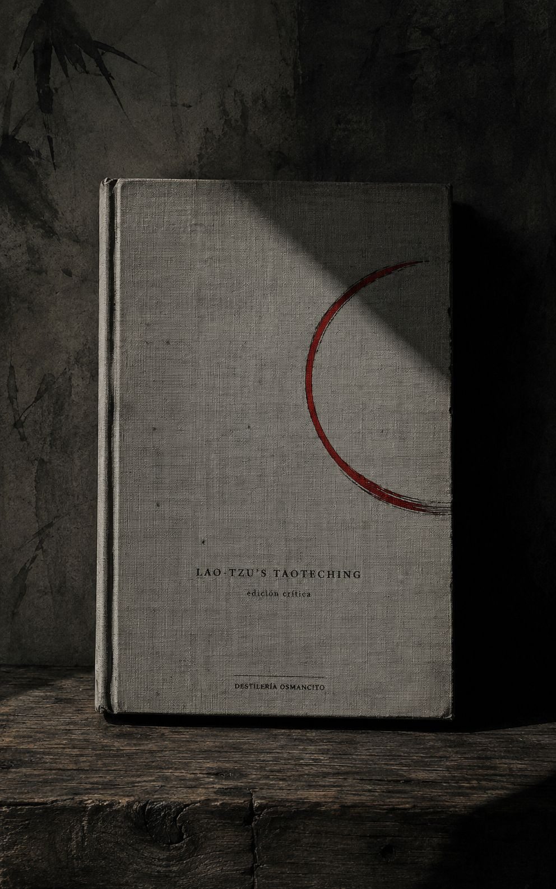
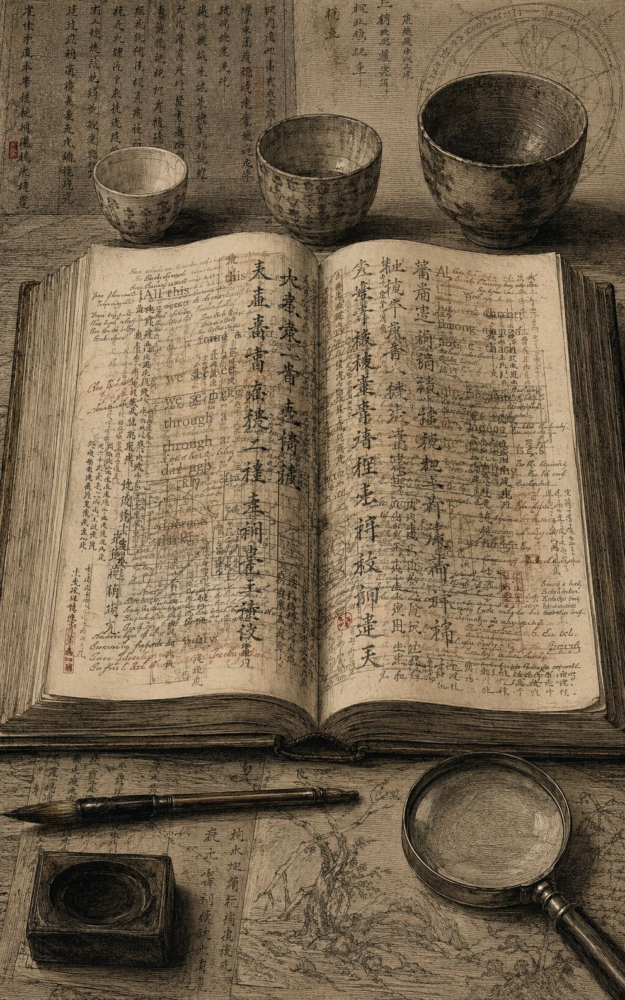
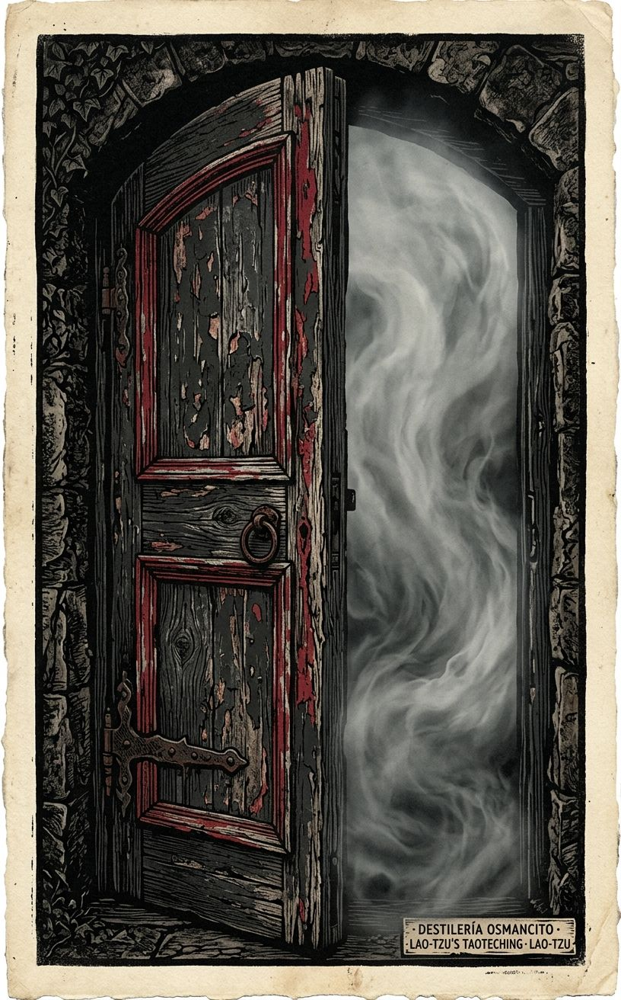
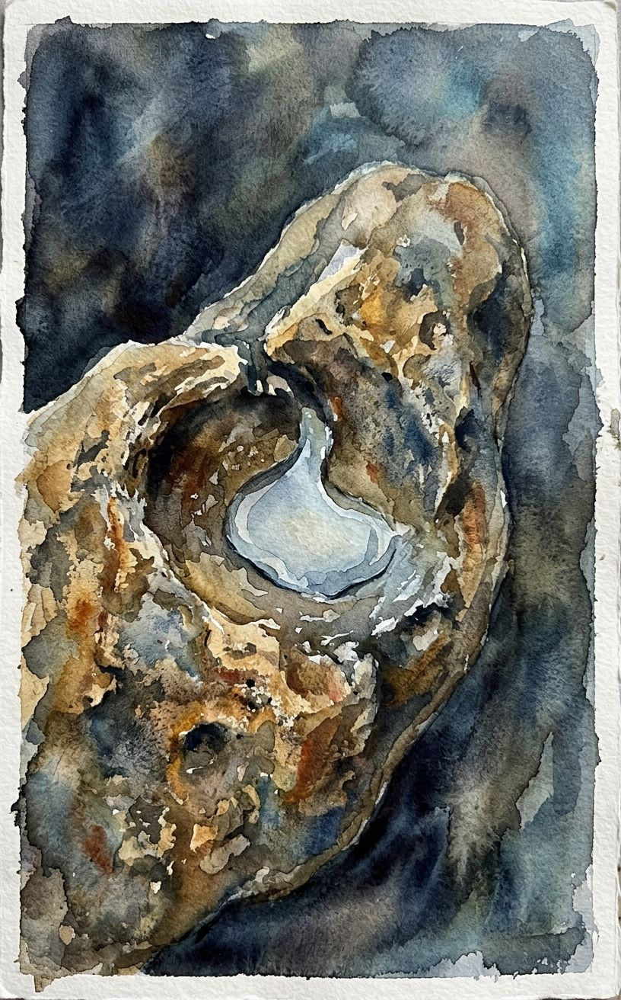

Un volumen delgado que pesa como si tuviera ochenta y un siglos adentro, no ochenta y un capítulos.
Esto no es un libro que se lee de corrido: es un pozo con ochenta y un cubos, cada uno bajado por Lao-tzu y subido después por generaciones de comentaristas que discuten entre sí sobre lo que el agua significaba. El corpus no es el poema —es el poema más dos mil años de gente tratando de no traicionarlo al explicarlo. Nombrar esto como “Tao Te Ching” es preciso; resumir lo que dice ya es una traición pequeña, la misma que el primer verso advierte.
Título — Lao-tzu’s Taoteching Autor — Lao-tzu, con traducción, notas y comentario acumulado de Red Pine (Bill Porter) Año — Compuesto hacia finales del siglo VI a.C.; esta traducción publicada en 1996, edición revisada en 2009/2012 Género — Filosofía sapiencial en verso, con aparato de comentario crítico multivocal Extensión estimada — aproximadamente 49.800 palabras, unas 199 páginas a 250 palabras por página, 81 capítulos más prefacio e introducción Idioma original — Chino clásico Palabra más frecuente con contenido — Tao (325 apariciones, excluyendo el verbo atributivo “says” que domina por la estructura misma del comentario). Confirma lo que el corpus declara ser: un libro que no deja de nombrar aquello que en su primer verso dice que no puede nombrarse.
El Taoteching es un tratado breve —ochenta y un versos— atribuido a un archivista de la corte Chou llamado Lao-tzu, que enseña el gobierno del mundo y de uno mismo por la vía de la no-acción, la humildad y la semejanza con el agua. Esta edición de Red Pine no entrega el poema solo: cada verso viene seguido de un mosaico de comentarios de decenas de eruditos y monjes chinos —desde Wang Pi en el siglo III hasta lecturas del siglo XX— más las propias notas filológicas del traductor sobre variantes textuales entre el texto estándar, los manuscritos de Mawangtui (168 a.C.) y los fragmentos de Kuotien (300 a.C.), estos últimos hallados en una tumba en 1993. El libro es entonces dos cosas a la vez: el poema y el registro de dos milenios de gente peleándose amablemente sobre qué quiso decir.
Lao-tzu — figura semilegendaria, archivista de la corte, autor atribuido del texto. Red Pine (Bill Porter) — traductor, compilador del aparato de comentarios, autor de las notas filológicas y del prefacio/introducción. Wang Pi — comentarista del siglo III, una de las voces más citadas. Ho-shang Kung — comentarista antiguo, lectura de tono más religioso/alquímico. Su Ch’e, Te-Ch’ing, Wu Ch’eng, y decenas más — comentaristas chinos de distintos siglos cuyas voces se intercalan verso a verso. Yin Hsi — el guardián del paso fronterizo a quien, según la leyenda referida en el propio texto, Lao-tzu entregó el manuscrito antes de desaparecer.
No hay trama en sentido narrativo. El territorio es doctrinal y se despliega en dos niveles simultáneos que el lector recorre a la vez:
Nivel 1 — el poema. Ochenta y un capítulos breves, sin numeración temática explícita pero con una progresión reconocible: los primeros versos (1–37, tradicionalmente “Libro del Tao”) sientan la naturaleza indecible, vacía y generativa del Tao; los versos posteriores (38–81, “Libro del Te”) giran hacia la virtud, el gobierno, la guerra y la conducta del sabio. Temas que retornan sin resolverse: la paradoja del nombre (lo que se nombra deja de ser lo nombrado), el elogio de lo vacío y lo blando sobre lo lleno y lo duro, el gobernante que gobierna sin intervenir, el sabio que no compite, la crítica a la moral confuciana (kindness, justice) como síntoma de que el Tao ya se perdió, y el ideal del “estado pequeño” (verso 80) como utopía anti-expansiva.
Nivel 2 — el aparato. Cada verso trae su propia micro-historia de recepción: qué dijo Wang Pi, qué corrigió Su Ch’e, qué variante aparece en Mawangtui frente al texto estándar, qué verso directamente no existe en los fragmentos de Kuotien (varios no lo tienen, lo cual el traductor señala cada vez). El prefacio narra el hallazgo de 1993 de las tablillas de bambú en una tumba en Kuotien —el hallazgo textual que motivó la revisión de esta edición. La introducción de 1996 desarrolla la tesis de que “Tao” está lingüísticamente emparentado con “luna” en varias lenguas (tibetano, miao, egipcio, sánscrito), y que las imágenes del texto (lo que crece desde la oscuridad, lo que mengua y crece) son en el fondo imágenes lunares.
Primer contacto: el libro no se deja leer rápido aunque cada verso podría leerse en diez segundos. La resistencia no está en la dificultad del poema —que es limpio, casi infantil en su sintaxis— sino en el peso del aparato que lo rodea: cada línea abre una grieta de siglos de gente discutiendo su sentido, y esa grieta invita a quedarse. Es un libro que enseña paciencia por el simple hecho de exigirla para ser recorrido.
El nombre contra lo nombrado — el texto entero se construye sobre la advertencia de que nombrar traiciona, y sin embargo no deja de nombrar: Tao, Virtud, el sabio, el vacío. ¿Puede un libro de 5.000 caracteres obedecer su propio primer verso?
Autoridad sin autor fijo — ¿de quién es este texto cuando Wang Pi, Ho-shang Kung, Su Ch’e y Red Pine llevan dos mil años reescribiéndolo por acumulación de glosa? El comentario no aclara al poema: se vuelve parte de él.
Blandura como fuerza política — el elogio recurrente de lo débil, lo bajo, lo vacío no es solo actitud personal sino programa de gobierno (versos 30, 31, 61, 66, 76, 78). ¿Es el Taoteching un manual espiritual disfrazado de tratado político, o un tratado político que encontró que la única forma de decir “no invadas” era hablar de agua?
El camino que se hace camino no es el Camino Inmortal; el nombre que se hace nombre no es el Nombre Inmortal. Sin nombre es la doncella del Cielo y la Tierra; con nombre, la madre de las diez mil cosas. Dos nombres distintos para lo mismo: a eso lo llamamos oscuro, la oscuridad más allá de lo oscuro, la puerta a todo comienzo.
Todo el mundo conoce la belleza, pero si eso se vuelve bello, esto se vuelve feo. Tener y no tener se crean mutuamente; difícil y fácil se producen mutuamente; largo y corto se dan forma; alto y bajo se completan. Por eso el sabio realiza obras sin esfuerzo y enseña lecciones sin palabras.
Los mejores son como el agua, que ayuda a todos sin competir, eligiendo lo que otros evitan; así se acercan al Tao.
Treinta rayos convergen en un cubo, pero es el vacío lo que hace que la rueda funcione. Las vasijas se moldean con arcilla, pero es el hueco lo que hace que la vasija funcione. Se tallan puertas y ventanas para una casa, pero es el vacío lo que hace que la casa funcione. Así, lo que existe es útil, pero es de lo que no existe de donde viene el uso.
Los cinco colores nos ciegan los ojos; los cinco tonos nos ensordecen los oídos; los cinco sabores nos entumecen la boca. Por eso el gobierno de los sabios favorece el estómago sobre los ojos.
Los grandes maestros de la antigüedad se enfocaban en lo indiscernible y penetraban la oscuridad. Nunca los conocerías. Eran cuidadosos como quien cruza un río en invierno, cautelosos como quien teme a sus vecinos, reservados como un huésped, simples como madera sin tallar, abiertos como un valle, turbios como un charco. Pero quienes pueden ser como un charco se aclaran al quedarse quietos, y quienes pueden descansar cobran vida al ser movidos.
El Tao permanece sin nombre, simple, y aunque pequeño nadie puede mandarlo. Instalar en pie la Gran Imagen y el mundo vendrá y quedará a salvo. El Tao habla palabras llanas que no tienen sentido: lo miramos y no lo vemos, lo escuchamos y no lo oímos, y sin embargo lo usamos sin fin.
Imagina algo nebuloso, aquí antes del Cielo y la Tierra, sutil y elusivo, sin habitar en ningún sitio y sin nada que lo constriña. Podría ser la madre de todos nosotros. Sin conocer su nombre, lo llamo el Tao; forzado a describirlo, lo describo como grande. Grande significa que fluye sin cesar; fluir sin cesar significa alcanzar lejos; alcanzar lejos significa regresar.
Reconoce lo masculino pero conserva lo femenino, y sé la doncella del mundo. Siendo la doncella del mundo, no pierdas tu Virtud Inmortal; no perdiéndola, vuelve a ser un recién nacido. Reconoce lo blanco pero conserva lo negro, y sé la guía del mundo.
El Tao da nacimiento al uno; el uno da nacimiento al dos; el dos da nacimiento al tres; el tres da nacimiento a las diez mil cosas. Lo que el mundo odia —ser huérfano, viudo, indigente— los reyes lo usan como título. Así, algunos ganan perdiendo, otros pierden ganando.
Quienes conocen no hablan; quienes hablan no conocen. Sellar la abertura, cerrar la puerta, embotar el filo, deshacer el nudo, suavizar la luz, unirse al polvo: a esto se le llama la Unión Oscura. No puede abrazarse ni abandonarse, no puede ayudarse ni dañarse, no puede exaltarse ni rebajarse; por eso el mundo la exalta.
La razón por la que el mar puede gobernar cien ríos es que ha dominado el estar más abajo. Por eso puede gobernar cien ríos. Así, si los sabios quisieran estar por encima del pueblo, deberían hablar como si estuvieran por debajo; si quisieran ir al frente, deberían actuar como si fueran detrás.
Actuar sin actuar, trabajar sin trabajar, entender sin entender. Grande o pequeño, mucho o poco, pagar cada agravio con virtud. Planear lo difícil mientras es fácil; ocuparse de lo grande mientras es pequeño. La tarea más difícil del mundo comienza fácil; la meta más grande del mundo comienza pequeña.
Cuando la gente deja de temer a la autoridad, aparece una autoridad mayor. No restrinjas dónde habita la gente; no reprimas cómo vive. Si no los reprimes, no protestarán.
Imagina un estado pequeño con poca población. Que haya herramientas que ahorren trabajo y no se usen. Que la gente considere la muerte y no se aleje mucho. Que haya botes y carretas pero ninguna razón para montarlos, armadura y armas pero ninguna razón para emplearlas. Que la gente vuelva a usar nudos para contar y esté satisfecha con su comida, complacida con su ropa, contenta con su hogar, feliz con sus costumbres. Que haya otro estado tan cerca que se oigan sus perros y gallinas, y aun así la gente viva y muera sin haberlo visitado nunca.
Las palabras verdaderas no son bellas; las palabras bellas no son verdaderas. Los buenos no son elocuentes; los elocuentes no son buenos. Los sabios no son eruditos; los eruditos no son sabios. Los sabios no acumulan nada, pero cuanto más hacen por otros, mayor es su existencia; cuanto más dan a otros, mayor es su abundancia. El camino del Cielo es ayudar sin dañar; el camino del sabio es actuar sin luchar.
Sobre esta última línea, TE-CH’ING observa algo que el propio libro parecía prohibirse desde el primer verso: que Lao-tzu dijo que el Tao no puede ponerse en palabras, y sin embargo escribió cinco mil caracteres. Espera hasta el último verso para explicarlo —que aunque el Tao mismo no incluye palabras, por medio de palabras puede revelarse, pero solo por palabras que vienen del corazón. Y detrás de esa observación, la tesis con la que Red Pine abre el libro entero: que Tao comparte herencia lingüística con palabras que significan “luna” en culturas distantes —los tibetanos la llaman da-ua, los miao tao-tie, los antiguos egipcios thoth—, y que las imágenes del texto (lo que crece desde la oscuridad, lo que mengua y crece, lo que no puede llenarse) son, en el fondo, imágenes lunares que nadie antes había leído así.
Este corpus no contiene refranes incrustados en una trama —es, de principio a fin, refranero puro: cada uno de los 81 capítulos es en sí mismo una o varias sentencias de validez general, puestas en boca de una sola voz que nunca narra un hecho particular, solo enuncia leyes. La tensión no está en quién cita el refrán frente a quién actúa distinto —no hay personajes que las ignoren— sino en la acumulación misma: un libro que es, literalmente, nada más que máximas, hasta el punto de que extraer “los refranes” del texto es casi copiar el texto entero.
El corpus completo (81 capítulos, ~5.000 caracteres en chino, ~49.800 palabras en esta edición con comentario) está compuesto de sentencias de validez general. No hay personajes: la única voz sentenciosa es la del propio Lao-tzu como enunciador del texto; los comentaristas (Wang Pi, Su Ch’e, Ho-shang Kung, y decenas más) glosan esas sentencias pero rara vez añaden máximas propias de igual estatus —citan clásicos anteriores (el Yiching, Confucio, Chuang-tzu) cuando lo hacen. No hay concentración por sección: las sentencias están distribuidas parejo en los 81 capítulos, con picos de mayor densidad aforística discreta (líneas que funcionan sueltas, fuera de su verso) en los capítulos 2, 8, 22, 24, 33, 36, 41, 63, 76, 78, y 81. Dado que el criterio de “unidad discreta y citable por separado” exige extraer solo las líneas que se sostienen solas, sin el resto del verso, el listado siguiente selecciona 15 sentencias de ese tipo — no los 81 capítulos completos, que ya están registrados en Néctar.
1. “Todo el mundo conoce la belleza, pero si eso se vuelve bello, esto se vuelve feo” — voz de Lao-tzu, verso 2. A propósito de cómo los opuestos se generan mutuamente.
2. “Los mejores son como el agua” — voz de Lao-tzu, verso 8. A propósito de la virtud de no competir.
3. “Es el vacío lo que hace que la rueda funcione” — voz de Lao-tzu, verso 11. A propósito de la utilidad de lo que no existe.
4. “Quienes conocen no hablan; quienes hablan no conocen” — voz de Lao-tzu, verso 56. A propósito de la Unión Oscura, lo que no puede exaltarse ni rebajarse.
5. “La tarea más difícil del mundo comienza fácil; la meta más grande del mundo comienza pequeña” — voz de Lao-tzu, verso 63. A propósito de actuar sin actuar.
6. “Un árbol gigante crece del brote más diminuto; una gran torre se alza de un cesto de tierra; un viaje de mil millas comienza en tus pies” — voz de Lao-tzu, verso 64. A propósito de actuar antes de que algo exista.
7. “La razón por la que el mar puede gobernar cien ríos es que ha dominado el estar más abajo” — voz de Lao-tzu, verso 66. A propósito del liderazgo del sabio.
8. “Nada en el mundo es más débil que el agua, pero contra lo duro y lo fuerte nada la supera” — voz de Lao-tzu, verso 78. A propósito de que lo blando vence a lo duro.
9. “Las palabras verdaderas no son bellas; las palabras bellas no son verdaderas” — voz de Lao-tzu, verso 81, línea de cierre del libro entero. A propósito de la relación entre lenguaje y verdad.
10. “Cuando el gran Camino desaparece, nos encontramos con la bondad y la justicia” — voz de Lao-tzu, verso 18. A propósito de que la virtud moralizada es síntoma de pérdida, no de progreso.
11. “Quienes se conocen a otros son perceptivos; quienes se conocen a sí mismos son sabios” — voz de Lao-tzu, verso 33. A propósito del autoconocimiento frente al conocimiento del mundo.
12. “Actuar es fracasar; controlar es perder” — voz de Lao-tzu, verso 64. A propósito de por qué el sabio no actúa ni controla.
13. “Cuando la gente nace es suave y débil; cuando perece es dura y rígida” — voz de Lao-tzu, verso 76. A propósito de que lo blando es signo de vida, lo rígido de muerte.
14. “El Camino del Cielo favorece el arco: baja lo alto, levanta lo bajo” — voz de Lao-tzu, verso 77. A propósito de la justicia distributiva del Tao frente a la humana.
15. “Los sabios no acumulan nada, pero cuanto más hacen por otros, mayor es su existencia” — voz de Lao-tzu, verso 81. A propósito de la generosidad sin pérdida.
El corpus no marca una actitud explícita hacia el refranero como forma —no hay un personaje que los colecciona ni otro que los desprecie, porque no hay personajes. Pero el propio verso 81 declara metatextualmente algo sobre el género entero del libro: “las palabras verdaderas no son bellas” es, dicho por un texto que se compone íntegramente de sentencias pulidas y memorables, una paradoja que el propio Lao-tzu parece reconocer sin resolver.
Red Pine abre esta edición revisada narrando un hallazgo: en 1993, tres fajos de tablillas de bambú fueron desenterrados de una tumba cerca de la aldea de Kuotien, en la provincia de Hupei. La tumba pertenecía al tutor del príncipe heredero del antiguo estado de Ch’u, y las tablillas —fechadas hacia el 300 a.C.— constituyen la copia más antigua conocida del Taoteching, cien años anterior a los manuscritos de Mawangtui hallados previamente. A diferencia de estos, los textos de Kuotien no contienen los ochenta y un versos completos: son selecciones, a veces de un solo verso, y queda sin resolver si formaban parte de un proto-Taoteching o eran simples extractos de un texto ya completo. Este hallazgo es lo que empuja a Red Pine a revisar su traducción de 1996, publicada originalmente sin ese testimonio textual.
La introducción de 1996, más extensa, desarrolla una tesis central que gobierna toda la traducción: que Tao —carácter compuesto de “cabeza” y “caminar”— no significa simplemente “camino”, sino que está genealógicamente emparentado con la luna. Red Pine cita al erudito Tu Er-wei, quien argumenta que la “cabeza” en el carácter tao es el rostro de la luna, y que el sentido de “camino” proviene de observarla cruzar el cielo. Tu añade que tao comparte herencia lingüística con palabras para “luna” en otras culturas: los tibetanos dicen da-ua, los miao (que vivían en el mismo territorio que Lao-tzu) dicen tao-tie, los antiguos egipcios decían thoth; Red Pine agrega el sánscrito dar-sha. La evidencia no es solo lingüística sino textual: el propio Taoteching describe el Tao como algo que mengua y crece, que tiene fases visibles de trece días, que puede tensarse como un arco o expandirse como un fuelle, que se mueve “al revés” respecto al sol —todas imágenes lunares. El símbolo taoísta tradicional, que muestra las dos fases conjuntas de la luna, refuerza la lectura. Red Pine no afirma que Lao-tzu fuera consciente de esta asociación, pero sostiene que las imágenes son demasiado lunares para ser accidentales.
El verso 1 establece de entrada la paradoja fundacional: el camino que se hace camino no es el Camino Inmortal, el nombre que se hace nombre no es el Nombre Inmortal. Sin-nombre es la doncella de Cielo y Tierra; con-nombre, la madre de las diez mil cosas. Te-Ch’ing observa que toda la filosofía de Lao-tzu está aquí, y que las cinco mil palabras restantes solo expanden este primer verso. Red Pine documenta ya en este verso su método filológico: prefiere heng (inmortal/luna creciente) sobre ch’ang (eterno) siguiendo los textos de Mawangtui, y advierte que este verso no aparece en los fragmentos de Kuotien.
El verso 2 desarrolla la generación mutua de opuestos —belleza y fealdad, tener y no tener, difícil y fácil— y concluye que el sabio actúa sin esfuerzo y enseña sin palabras, sin apropiarse de lo que engendra.
El verso 3 pasa al terreno político: no otorgar honores evita que la gente luche; no valorar tesoros evita que robe. El gobierno del sabio vacía la mente pero llena el estómago, debilita la voluntad pero fortalece los huesos, manteniendo a la gente sin saber ni desear.
El verso 4 describe el Tao como vacío inagotable, “el ancestro de todos nosotros”, que embota los filos, desata los nudos, suaviza la luz y se une al polvo —frase que reaparecerá casi idéntica en el verso 56.
El verso 5 introduce una de las imágenes más provocadoras del libro: Cielo y Tierra son “sin corazón” (heartless), tratan a las criaturas como perros de paja —usados en rituales y luego desechados sin odio ni amor. Los sabios son igual de “sin corazón” con la gente. El espacio entre Cielo y Tierra es como un fuelle: vacío pero inagotable. Hu Shih, comentarista moderno citado aquí, observa que esta afirmación socava la creencia antigua de que Cielo y Humanidad compartían linaje, sentando las bases de una filosofía natural no antropocéntrica.
El verso 6 es breve: el espíritu del valle que no muere se llama el vientre oscuro; su boca es la fuente de Cielo y Tierra. Red Pine conecta esto con una fuente antigua, el Shanhaiching, que describe el “espíritu del valle” como la luna misma.
El verso 7 explica por qué Cielo y Tierra son eternos: porque no viven para sí mismos. De ahí que los sabios se retiren y terminen adelante, se pongan afuera y terminen a salvo —por su falta de interés propio.
El verso 8, uno de los más citados del libro entero según nota el propio Red Pine, compara a los mejores con el agua: ayuda a todos sin competir, elige lo que otros evitan, y por eso se acerca al Tao. Enumera nueve modos de ser del agua: morar con la tierra, pensar con profundidad, ayudar con bondad, hablar con honestidad, gobernar con paz, trabajar con destreza, moverse con el tiempo.
El verso 9 advierte contra el exceso: mejor detenerse que seguir llenando; una habitación llena de tesoros nunca está segura; cuando el trabajo está hecho, hay que retirarse —esto es el Camino del Cielo. Red Pine cita a Confucio observando un recipiente que se volcaba al llenarse más allá de la mitad, ilustrando la misma lección.
El verso 10 es una serie de preguntas retóricas dirigidas a quien cultiva la vía yóguica: ¿puedes mantener quieta tu alma creciente, hacer tu respiración suave como la de un bebé, limpiar tu espejo oscuro de polvo, gobernar sin esfuerzo, ser la hembra en la Puerta del Cielo? Termina nombrando esto “Virtud Oscura”: dar vida sin poseer, criar sin controlar.
El verso 11 contiene la imagen más famosa del libro sobre la utilidad de lo vacío: treinta rayos convergen en un cubo, pero es el vacío lo que hace funcionar la rueda; las vasijas se moldean con arcilla, pero es el hueco lo que las hace útiles; se tallan puertas y ventanas, pero son los espacios los que hacen funcionar la casa. La existencia hace útil una cosa, pero es la no-existencia la que la hace funcionar.
El verso 12 advierte contra el exceso sensorial: los cinco colores ciegan, los cinco tonos ensordecen, los cinco sabores entumecen; cazar y cabalgar enloquece la mente; los bienes difíciles de obtener incitan al crimen. Por eso el sabio favorece el estómago (lo interior, lo suficiente) sobre los ojos (lo exterior, lo insaciable).
El verso 13 explora la paradoja de favor y desgracia, honor y desastre: ambos “vienen con una advertencia” porque dependen de tener un cuerpo. Quien honra su cuerpo más que al mundo puede recibir el encargo del mundo.
El verso 14 describe el Tao como lo que se mira sin ver, se escucha sin oír, se alcanza sin asir —“la forma sin forma, la imagen inmaterial”. Quien sostiene esta Vía puede gobernar el reino presente y descubrir “la antigua doncella” —referencia que enlaza con el verso 1.
El verso 15 retrata a los antiguos maestros como cautelosos como quien cruza un río en invierno, reservados como un huésped, simples como madera sin tallar, turbios como un charco que se aclara al aquietarse.
El verso 16 introduce el tema del retorno: manteniendo el vacío como límite y la quietud como centro, las diez mil cosas surgen y el sabio las ve regresar a sus raíces. Conocer cómo perdurar es sabiduría; no saberlo es sufrir en vano.
El verso 17 traza una escala histórica de degradación del gobierno: en las Edades Superiores la gente apenas sabía que sus gobernantes existían; luego los amó y alabó; luego les temió; finalmente los despreció. Cuando la honestidad falla, prevalece la deshonestidad.
El verso 18 continúa esa lógica: cuando el Gran Camino desaparece, aparecen la bondad y la justicia; cuando la razón aparece, aparece el gran engaño; cuando las seis relaciones familiares fallan, aparecen la obediencia y el amor como virtudes destacadas —síntoma, no cura.
El verso 19 propone deshacerse de la sabiduría, la bondad y la ganancia como remedio, y sustituirlas por “mostrar lo sin teñir y preservar lo sin tallar” —reducir el interés propio y limitar los deseos.
El verso 20 es el más personal y extenso hasta este punto: Lao-tzu se describe a sí mismo como diferente de todos —simple donde otros son brillantes, confuso donde otros están seguros, “como el océano que mengua y crece sin cesar”, prefiriendo aún el pecho de su madre mientras todos los demás persiguen metas.
El verso 21 describe la Virtud Vacía como lo que emana del Tao: éste mengua y crece, pero dentro hay una imagen, una esencia real, un corazón. A través de los siglos su nombre no ha cambiado; por medio de él conocemos a nuestros padres.
El verso 22 formula la paradoja de la totalidad por la incompletud: lo incompleto se vuelve completo, lo torcido se vuelve recto, lo hueco se llena. El sabio se aferra a una sola cosa para guiar al mundo, y porque no compite, nadie puede competir contra él.
El verso 23 declara que las palabras susurradas son naturales —un vendaval no dura toda la mañana— y que quien sigue el Camino debe ser uno con el éxito y uno con el fracaso por igual, porque el Camino mismo a veces tiene éxito y a veces fracasa.
El verso 24 repite en otra clave la lección del 22: quien camina de puntillas no se sostiene, quien se exhibe no brilla; los viajeros dicen que comer demasiado y caminar deprisa son simplemente malos, y quienes poseen el Camino los evitan.
El verso 25 presenta la descripción cosmogónica más citada del libro: algo nebuloso existía antes de Cielo y Tierra, sin nombre; forzado a nombrarlo, Lao-tzu lo llama “grande”, lo que fluye sin cesar, lo que alcanza lejos, lo que regresa. El Tao es grande, el Cielo es grande, la Tierra es grande, el gobernante también es grande —los Cuatro Grandes— y cada uno imita al anterior hasta llegar al Tao, que se imita solo a sí mismo.
El verso 26 enseña que lo pesado es raíz de lo ligero, lo quieto es maestro de lo inquieto: un señor puede viajar todo el día sin alejarse nunca de sus provisiones; ser demasiado ligero es perder la base propia.
El verso 27 enumera una serie de “buenas prácticas” paradójicas —buen caminar no deja huellas, buen hablar no contiene fallas, buen cerrar no usa cerraduras y sin embargo no puede abrirse— para concluir que los sabios no abandonan a nadie ni a nada útil, práctica que llama “ocultar la luz”.
El verso 28 pide reconocer lo masculino pero sostener lo femenino, ser “la doncella del mundo” sin perder la Virtud Inmortal, volver a ser un recién nacido; reconocer lo blanco pero sostener lo negro. Un bloque de madera sin tallar puede convertirse en herramientas, pero los sabios prefieren seguir siendo el bloque.
El verso 29 declara que gobernar el mundo por la fuerza no funciona: el mundo es “algo espiritual” que no puede forzarse sin dañarlo. Todo fluctúa —a veces lidera, a veces sigue, a veces expande, a veces colapsa— y el sabio evita los extremos.
El verso 30 aconseja al gobernante usar el Tao, no las armas: donde acampan ejércitos crecen zarzas. Ganar sin orgullo, sin vanidad, sin crueldad; ganar solo cuando no hay otra opción, “esto es ganar sin fuerza”.
El verso 31 refuerza la crítica antimilitarista: las armas no son herramientas auspiciosas; el Taoísta las rehúye. Cuando se gana una batalla, debe tratarse como un funeral, honrando a los muertos con lágrimas.
El verso 32 describe el Tao como innombrado y simple, tan pequeño que nadie puede mandarlo, y sin embargo si un señor lo sostuviera, el mundo entero acudiría a él como invitado. Advierte: una vez que tenemos un nombre, debemos conocer la moderación.
El verso 33 contiene una de las sentencias más citadas del libro: quien conoce a otros es perceptivo, quien se conoce a sí mismo es sabio; quien conquista a otros es fuerte, quien se conquista a sí mismo es poderoso; quien conoce el contentamiento es rico.
El verso 34 describe el Tao como algo que fluye sin dirección fija, que da vida a todo sin hablar ni reclamar mérito —“¿deberíamos llamarlo pequeño? Todo se vuelve hacia él pero no ejerce control. ¿Deberíamos llamarlo grande?”
El verso 35 invita a sostener la Gran Imagen para que el mundo venga a salvo: el Tao habla palabras llanas que “no tienen sentido” porque se miran sin verse y se escuchan sin oírse, y sin embargo se usan sin fin.
El verso 36 enseña una estrategia paradójica de poder: lo que quieras acortar, primero alárgalo; lo que quieras debilitar, primero fortalécelo. Esto se llama “ocultar la luz”: lo débil conquista lo fuerte, así como el pez no puede sobrevivir fuera de las profundidades.
El verso 37 resume la doctrina de la no-acción: el Tao no hace ningún esfuerzo y sin embargo no hay nada que no haga. Si un gobernante pudiera sostenerlo, la gente se transformaría por sí misma.
El verso 38 marca la transición tradicional entre el “Libro del Tao” y el “Libro del Te” (Virtud), y establece su distinción central: la Virtud Superior no es virtuosa, por eso posee virtud; la Virtud Inferior no carece de virtud, por eso no posee ninguna. Traza una escala descendente —Virtud, Bondad, Justicia, Ritual— donde cada peldaño marca una pérdida mayor de espontaneidad: el Ritual, cuando no obtiene respuesta, amenaza y compele. La virtud aparece cuando se pierde el Camino; la bondad, cuando se pierde la virtud; la justicia, cuando se pierde la bondad; el ritual, cuando se pierde la justicia —“el ritual marca el ocaso de la fe y el inicio de la confusión”.
El verso 39 describe cómo Cielo, Tierra, espíritus, valles y reyes se volvieron “uno” en el pasado y advierte que si permanecieran siempre en ese estado extremo (siempre claros, siempre quietos, siempre llenos) se romperían: lo noble se basa en lo humilde, por eso los reyes se llaman a sí mismos “huérfanos, viudos, indigentes”.
El verso 40 declara que el Tao se mueve “al revés” y trabaja a través de la debilidad: las cosas de este mundo vienen de algo, algo viene de nada.
El verso 41 describe cómo la gente superior sigue el Camino con devoción al oírlo, la gente promedio duda de su existencia, y la gente inferior se ríe a carcajadas —“si no se rieran, no sería el Camino”. Enumera doce dichos paradójicos antiguos: el camino más brillante parece oscuro, la virtud más alta parece baja, la verdad más cierta parece incierta.
El verso 42 presenta la cosmogonía numérica más citada del libro: el Tao da nacimiento al uno, el uno al dos, el dos al tres, el tres a las diez mil cosas, que llevan yin a la espalda y yang en el abrazo, con el aliento entre ambos para la armonía. Cierra con la máxima “los tiranos nunca eligen su muerte”, que Lao-tzu declara adoptar como maestro.
El verso 43 afirma que lo más débil del mundo vence a lo más fuerte, que lo que no existe encuentra espacio donde no hay ninguno; de ahí el beneficio de la instrucción sin palabras y la ayuda sin esfuerzo, que “pocos en el mundo pueden igualar”.
El verso 44 pregunta qué es más vital, la fama o la salud; más precioso, la salud o la riqueza; y concluye que cuanto más profundo el amor, más alto el costo; quien conoce el contentamiento no sufre vergüenza.
El verso 45 despliega la lógica de la perfección que parece su opuesto: lo perfectamente completo parece deficiente, lo perfectamente lleno parece vacío, lo perfectamente recto parece torcido —y solo quien sabe ser perfectamente quieto puede gobernar el mundo.
El verso 46 contrasta dos mundos: cuando el Tao está presente, los caballos de mensajería fertilizan los campos; cuando está ausente, los caballos de guerra se crían en la frontera. Ningún crimen es peor que ceder al deseo; el contentamiento del contentamiento es el verdadero contentamiento.
El verso 47 enseña que sin salir de la puerta se puede conocer el mundo entero: cuanto más lejos viaja la gente, menos sabe. El sabio conoce sin viajar, nombra sin ver, triunfa sin intentarlo.
El verso 48 contrasta buscar el aprendizaje (que gana cada día) con buscar el Camino (que pierde cada día), hasta llegar a “no hacer nada”, que significa “nada sin hacer”. Quienes gobiernan el mundo no están ocupados.
El verso 49 describe a los sabios como carentes de mente propia: su mente es la mente del pueblo. Son buenos con los buenos y también con los malos hasta que se vuelven buenos; en el mundo, los sabios se retiran y funden su mente con la de todos, mientras la gente abre ojos y oídos y ellos los cubren.
El verso 50 introduce el enigmático cómputo de “los trece”: trece son los seguidores de la vida, trece los de la muerte, pero quien vive para vivir se mueve hacia la tierra de la muerte. Quien guarda bien su vida no es herido por soldados, rinocerontes ni tigres, “porque para él no hay tierra de la muerte”. Red Pine documenta el debate filológico sobre el significado del “trece” —Han Fei lo lee como los cuatro miembros y nueve orificios del cuerpo; Tu Er-wei, a quien Red Pine sigue, lo lee como referencia al ciclo lunar de trece días.
El verso 51 explica que el Camino los engendra, la Virtud los sostiene, la materia les da forma; y el Camino no posee lo que engendra ni controla lo que cría —esto se llama Virtud Oscura.
El verso 52 retoma la imagen de la madre y el hijo del verso 1: hay una doncella en el mundo que se vuelve madre del mundo; quien encuentra a la madre conoce al hijo; quien bloquea la abertura y cierra la puerta vive sin fatiga. Esto se llama “sostener la luna creciente”.
El verso 53 es una confesión hipotética: si Lao-tzu fuera suficientemente sabio, seguiría el Gran Camino, temiendo solo desviarse. Pero la gente prefiere atajos: palacios impolutos, campos abandonados, graneros vacíos —“esto se llama robo, y el robo no es el Camino”.
El verso 54 enseña que lo bien plantado no puede desarraigarse: la virtud cultivada en uno mismo se vuelve real; cultivada en la familia, crece; en la aldea, se multiplica; en el estado, abunda; en el mundo, está en todas partes. Se ve a los demás a través de uno mismo.
El verso 55 describe al poseedor de virtud abundante como un recién nacido: las avispas no lo pican, las bestias no lo arañan; su agarre es firme aunque sus huesos sean blandos; su aliento está perfectamente equilibrado. Conocer el equilibrio es perdurar; forzar el aliento para volverse fuerte es apresurar la vejez, “esto no es el Camino”.
El verso 56 repite casi textualmente la fórmula del verso 4 —“sellar la abertura, cerrar la puerta, embotar el filo, deshacer el nudo, suavizar la luz, unirse al polvo”— y la nombra Unión Oscura, que no puede exaltarse ni rebajarse, “por eso el mundo la exalta”.
El verso 57 opone tres modos de gobierno: la franqueza para gobernar un país, el engaño para hacer la guerra, y la no-acción para gobernar el mundo. Cuantas más prohibiciones, más pobre la gente; cuantas más armas afiladas, más caótico el reino.
El verso 58 observa que donde el gobierno se mantiene distante, la gente se abre; donde interviene, la gente se escabulle. La felicidad descansa en la desdicha, la desdicha se oculta en la felicidad —nadie sabe dónde terminan. El sabio es “un filo que no corta, una punta que no perfora”.
El verso 59 declara que nada supera la economía en gobernar a la gente y cuidar al Cielo: la economía lleva a planear con anticipación, que lleva a acumular virtud, que lleva a superarlo todo —esto se llama “raíces profundas y tronco sólido”, el Camino de una vida larga y duradera.
El verso 60 compara gobernar un gran estado con cocinar un pez pequeño: si se remueve demasiado, se deshace. Cuando el mundo se gobierna con el Tao, los espíritus no muestran poderes que dañen a la gente, y ni espíritu ni sabio se dañan mutuamente, “porque ambos dependen de la Virtud”.
El verso 61 propone que un gran estado es como una cuenca hidrográfica, la confluencia del mundo, “la hembra del mundo”, que usa la quietud para vencer al macho al mantenerse más bajo. Tanto el gran estado como el pequeño obtienen lo que desean si el más grande se mantiene abajo.
El verso 62 llama al Tao “el santuario de la creación”, tesoro de los buenos que también mantiene vivos a los malos: “¿cómo podríamos abandonar a la gente que es mala?” Ni los discos de jade ni los caballos igualan a quien ofrece este Camino sentado.
El verso 63 formula el programa de acción indirecta: actuar sin actuar, trabajar sin trabajar, entender sin entender; pagar cada agravio con virtud; planear lo difícil mientras es fácil, ocuparse de lo grande mientras es pequeño —“la tarea más difícil del mundo comienza fácil”.
El verso 64 extiende esa lógica temporal: es fácil gobernar mientras hay paz, fácil planear antes de que algo aparezca. Un árbol gigante crece del brote más diminuto; un viaje de mil millas comienza en los pies. Pero “actuar es fracasar, controlar es perder” —el sabio no actúa y por tanto no fracasa.
El verso 65 introduce una de las líneas más controvertidas del libro: los antiguos maestros del Camino no trataban de iluminar a la gente sino de mantenerla en la oscuridad, pues el conocimiento la hace difícil de gobernar. Quien gobierna sin conocimiento es “el paradigma del reino” —esto se llama Virtud Oscura.
El verso 66 explica por qué el mar puede gobernar cien ríos: porque ha dominado el estar más abajo. Por eso, si los sabios quisieran estar por encima del pueblo, deberían hablar como si estuvieran por debajo.
El verso 67 contiene la célebre declaración de los “tres tesoros” que Lao-tzu dice atesorar: primero la compasión, segundo la austeridad, tercero la renuencia a sobresalir. Porque es compasivo puede ser valiente; porque es austero puede ser generoso; “la compasión gana cada batalla y sobrevive a cada ataque”.
El verso 68 describe al oficial perfecto de la antigüedad como desarmado, al guerrero perfecto como no colérico, al vencedor perfecto como no hostil —“esto es la virtud de la no-agresión, esto es usar la fuerza de los otros, esto es unirse con el Cielo”.
El verso 69 traduce esa ética a la práctica militar: mejor ser el huésped que el anfitrión en la guerra, mejor retroceder un pie que avanzar una pulgada. “Ningún destino es peor que no tener enemigo” porque perderíamos el tesoro de la compasión; cuando los oponentes están igualados, prevalece el que siente pesar.
El verso 70 es la confesión más personal y melancólica del libro: “mis palabras son fáciles de entender y fáciles de practicar, pero nadie las entiende ni las practica”. Las palabras tienen un ancestro, los hechos un maestro; “la razón por la que no soy entendido es que soy yo quien no es entendido” —y por eso mismo es estimado.
El verso 71 formula la paradoja epistemológica del entender: entender y sin embargo no entender es trascendencia; no entender y sin embargo entender es aflicción. Los sabios no son afligidos porque tratan la aflicción como aflicción.
El verso 72 advierte que cuando la gente deja de temer a la autoridad, aparece una autoridad mayor —el temor a la muerte. No restrinjas dónde vive la gente ni reprimas cómo vive; si no la reprimes, no protestará.
El verso 73 contrasta osar actuar (que significa muerte) con osar no actuar (que significa vida): de los dos, uno beneficia, el otro daña, y nadie sabe por qué el Cielo prefiere uno sobre el otro. La Red del Cielo es amplia, de malla ancha, “pero nada se escapa”.
El verso 74 pregunta qué sentido tiene amenazar con matar a quien ya no teme la muerte: si la gente teme genuinamente morir y algunos actúan mal y los atrapamos y matamos, “¿quién más se atrevería?” Advierte contra ocupar el lugar del verdugo: “quienes cortan en lugar del carpintero rara vez escapan con las manos intactas”.
El verso 75 explica el hambre de la gente por los impuestos excesivos de quienes gobiernan arriba, y su dificultad para ser gobernada por la excesiva fuerza de los de arriba. Quienes hacen nada por vivir son más estimados que quienes aman demasiado la vida.
El verso 76 contrasta lo suave y lo rígido como signos de vida y muerte: cuando la gente nace es suave y débil; cuando perece es dura y rígida. Un ejército que se vuelve rígido sufre derrota; una planta que se vuelve rígida se quiebra —“lo duro y rígido habita abajo, lo suave y débil habita arriba”.
El verso 77 describe el Camino del Cielo como quien tensa un arco: baja lo alto, levanta lo bajo, toma de lo que sobra y da a lo que falta —a diferencia del Camino de la Humanidad, que toma de lo poco y da a lo que ya tiene mucho.
El verso 78 vuelve a la imagen del agua: nada en el mundo es más débil, pero contra lo duro y lo fuerte nada la supera, porque nada puede cambiarla. “Lo suave vence a lo duro, lo débil vence a lo fuerte” —algo que todo el mundo sabe pero nadie es capaz de practicar. “Las palabras correctas suenan al revés.”
El verso 79 observa que al resolver una gran disputa, siempre queda un resto de disputa —“¿cómo puede esto ser bueno?” Los sabios sostienen el marcador izquierdo y no hacen reclamos contra otros; el Camino del Cielo no favorece a nadie, pero siempre ayuda al bueno.
El verso 80 pinta la utopía política más citada del libro: un estado pequeño con poca población, donde hay herramientas que ahorran trabajo pero no se usan, botes y carretas sin razón para montarlos, armas sin razón para emplearlas; la gente vuelve a usar nudos para contar, contenta con su comida, su ropa, su hogar, sus costumbres —tan cerca de otro estado que se oyen sus perros y gallinas, y sin embargo la gente vive y muere sin haberlo visitado nunca.
El verso 81, el último, cierra el libro con la sentencia sobre el lenguaje que lo enmarca desde el verso 1: las palabras verdaderas no son bellas, las palabras bellas no son verdaderas; los sabios no acumulan nada, pero cuanto más hacen por otros, mayor es su existencia. “El Camino del Cielo es ayudar sin dañar; el Camino del Sabio es actuar sin luchar.” Te-Ch’ing observa, en el comentario final del libro, la tensión que atraviesa la obra entera: Lao-tzu dijo que el Tao no puede ponerse en palabras, y sin embargo escribió cinco mil caracteres para decirlo —esperando hasta esta última línea para explicar que, aunque el Tao mismo no incluye palabras, por medio de palabras que vienen del corazón puede revelarse. El libro termina, según la nota de Red Pine que cierra el volumen, con una invitación implícita a soltar las palabras mismas que lo componen: “que llegue una taza de té”.